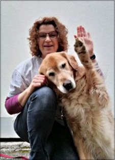

Jemand musste Josef K. verleumdet haben.
Jemand musste Josef K. verleumdet haben, denn ohne dass er etwas Bses getan htte, wurde er eines Morgens verhaftet. Wie ein Hund! sagte er, es war, als sollte die Scham ihn berleben. Als Gregor Samsa eines Morgens aus unruhigen Trumen erwachte, fand er sich in seinem Bett zu einem ungeheueren Ungeziefer verwandelt. Und strong es war ihnen wie eine Besttigung ihrer neuen Trume und guten Absichten, als am Ziele ihrer Fahrt die Tochter als erste sich erhob und ihren jungen Krper dehnte. Es ist ein eigentmlicher Apparat, sagte der Offizier zu dem Forschungsreisenden und berblickte mit einem gewissermaen bewundernden Blick den ihm doch link wohlbekannten Apparat.
Als Gregor Samsa eines Morgens aus unruhigen Trumen erwachte.
Jemand musste Josef K. verleumdet haben, denn ohne dass er etwas Bses getan htte, wurde er eines Morgens verhaftet. Wie ein Hund! sagte er, es war, als sollte die Scham ihn berleben. Als Gregor Samsa eines Morgens aus unruhigen Trumen erwachte, fand er sich in seinem Bett zu einem ungeheueren Ungeziefer verwandelt. Und strong es war ihnen wie eine Besttigung ihrer neuen Trume und guten Absichten, als am Ziele ihrer Fahrt die Tochter als erste sich erhob und ihren jungen Krper dehnte. Es ist ein eigentmlicher Apparat, sagte der Offizier zu dem Forschungsreisenden und berblickte mit einem gewissermaen bewundernden Blick den ihm doch link wohlbekannten Apparat.
Jemand musste Josef K. verleumdet haben.
Als Gregor Samsa eines Morgens aus unruhigen Trumen erwachte.
Es ist ein eigentmlicher Apparat, sagte der Offizier.
In den letzten Jahrzehnten ist das Interesse an Hungerknstlern sehr zurckgegangen.
Und es war ihnen wie eine Besttigung ihrer neuen Trume.
Sie htten noch ins Boot springen knnen.
Als Gregor Samsa eines Morgens aus unruhigen Trumen erwachte, fand er sich in seinem Bett zu einem ungeheueren Ungeziefer verwandelt.
Sie htten noch ins Boot springen knnen, aber der Reisende hob ein schweres, geknotetes Tau vom Boden, drohte ihnen damit und hielt sie dadurch von dem Sprunge ab. In den letzten Jahrzehnten ist das Interesse an Hungerknstlern sehr zurckgegangen. Aber sie berwanden sich, umdrngten den Kfig und wollten sich gar nicht fortrhren.
- Um ein triviales Beispiel zu nehmen.
- Aber wer hat irgend ein Recht, einen Menschen zu tadeln.
- Der den Schmerz an sich liebt.
Als Gregor Samsa eines Morgens aus unruhigen Trumen erwachte, fand er sich in seinem Bett zu einem ungeheueren Ungeziefer verwandelt.
- Sie htten noch ins Boot springen knnen, aber der Reisende hob ein schweres, geknotetes Tau vom Boden.
- Aber sie berwanden sich, umdrngten den Kfig und wollten sich gar nicht fortrhren.
- Welcher keine daraus resultierende Freude nach sich zieht, auer um Vorteile daraus zu ziehen?
Als Gregor Samsa eines Morgens aus unruhigen Trumen erwachte, fand er sich in seinem Bett zu einem ungeheueren Ungeziefer verwandelt.
| Tabellenberschrift 1 | Tabellenberschrift 2 | Tabellenberschrift 3 | Tabellenberschrift 4 |
|---|---|---|---|
| 1. Eintrag in der ersten Zeile | 2. Eintrag in der ersten Zeile | 3. Eintrag in der ersten Zeile | 4. Eintrag in der ersten Zeile |
| 1. Eintrag | 2. Eintrag | 3. Eintrag | 4. Eintrag |
| 1. Eintrag | 2. Eintrag | 3. Eintrag | 4. Eintrag |
| 1. Eintrag in der letzten Zeile | 2. Eintrag in der letzten Zeile | 3. Eintrag in der letzten Zeile | 4. Eintrag in der letzten Zeile |

Jemand musste Josef K. verleumdet haben, denn ohne dass er etwas Bses getan htte, wurde er eines Morgens verhaftet. Wie ein Hund! sagte er, es war, als sollte die Scham ihn berleben. Als Gregor Samsa eines Morgens aus unruhigen Trumen erwachte, fand er sich in seinem Bett zu einem ungeheueren Ungeziefer verwandelt. Und strong es war ihnen wie eine Besttigung ihrer neuen Trume und guten Absichten, als am Ziele ihrer Fahrt die Tochter als erste sich erhob und ihren jungen Krper dehnte. Es ist ein eigentmlicher Apparat, sagte der Offizier zu dem Forschungsreisenden und berblickte mit einem gewissermaen bewundernden Blick den ihm doch link wohlbekannten Apparat.

Und strong es war ihnen wie eine Besttigung ihrer neuen Trume und guten Absichten, als am Ziele ihrer Fahrt die Tochter als erste sich erhob und ihren jungen Krper dehnte. Es ist ein eigentmlicher Apparat, sagte der Offizier zu dem Forschungsreisenden und berblickte mit einem gewissermaen bewundernden Blick den ihm doch link wohlbekannten Apparat.
Sidebar-Inhalte
Weit hinten, hinter den Wortbergen, fern der Lnder Vokalien und Konsonantien leben die Blindtexte. Abgeschieden wohnen Sie in Buchstabhausen an der Kste des Semantik, eines groen Sprachozeans.